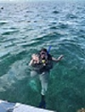
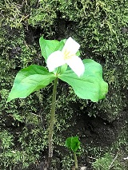
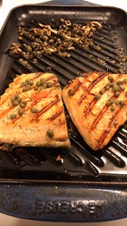
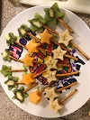
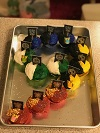
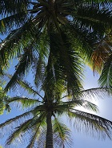
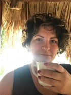
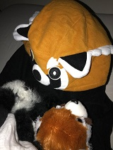

Better Begin with the B's
Bunnies, Belize, Babies, and more. It wasn't until developing this site that I realized how many of my favorite things begin with the letter B!
Bunnies
Bunnies have always been my favorite animal. A few reasons immediately come to mind:- Their little noses are just so darn cute!
- When they hop and bounce it is far more entertaining than simple walking or running that other animals do.
- They can be litter box trained.
- Their waste is excellent fertilizer (and far less stinky than other pets)!
- They are incapable of vomiting.
Belize
Having always loved travel far and near I was lucky enough to be introduced to Belize in 1998. I immediately fell in love with this country and am excited to share some of the reasons...- Proximity to the coral reef is excellent for SCUBA diving.
- You can easily spend equal time on the beach/in the water and exploring the jungle.
- The people of Belize are known for their kindness and sense of humor.
- Rich in culture & history you will learn something new every time you visit.
- The food... YUM!
Babies
My love for babies began as young as I can remember. I enjoyed babysitting (hey, another B!) from the age of 11 on. Having my own children has been the most rewarding experience in life, and something I always knew I wanted. But why babies?- Every moment of their being they are learning something new, and as older humans we get to observe this. It is fascinating!
- Their love is unconditional.
- Every act of helping them meet basic phsyical needs or engaging and helping them build emotinal connections is an opportunity to make a huge difference in a life.
Bilingual
Learning languages has always been a passion of mine. In fact when I was little I would just make up my own! Perhaps this is why the world of coding is so fascinating to me, after all it really is just another language.- I started learning Spanish in High School. I intended to Minor in Spanish but wasn't satisfied with how much I had learned so continued on to achieve a second degree in college.
- Italian came next. Though not starting with this language until college I have found that retention is much more difficult.
- Someday I would love to learn additional languages, likely in this order...
- Creole
- Latin
- Portuguese
Better Believe the Bountiful Beauty of B!
What about the non-B's?
There are plenty of areas of interest that DON'T start with the letter B.
- Swimming

- SCUBA Diving
 - Walking and Nature (they go hand in hand after all!)
 - Making and listening to music
- Cooking
 - Creating memorable birthday parties
  - Travel - near and far
 - Coffee! (black, with cream, with sugar, fancy, hot, iced, regular, decaf...it's all good)
 - And so much more!

The beauty of this world we live in is that new experiences are endless and with the right mindset we can learn something every single day.